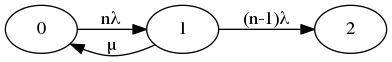

Es soll die im Skriptum angegebene Formel für die MTTDL bei RAID 3/4/5-Konfigurationen hergeleitet werden:
Erstellen Sie dazu einen Markovschen Übergangsgraphen!

Berechnen Sie die exakte MTTDL!
???
Wieso ist die im Skriptum angegebene Näherung gerechtfertigt?
ist zu vernachlässigen, da verschwindend gering.